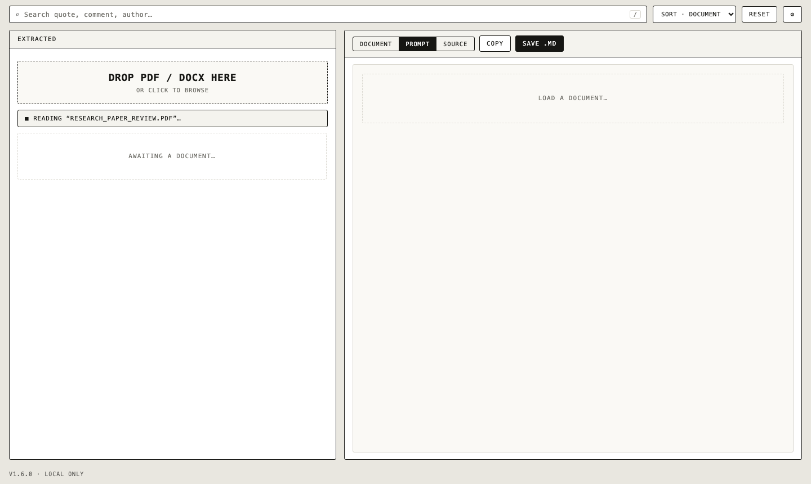
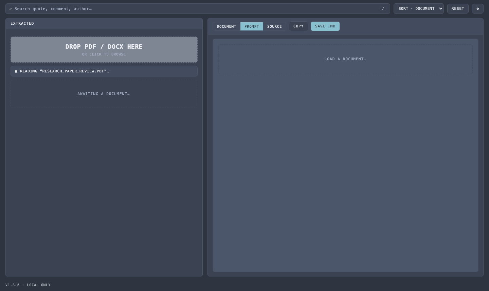

Comment Extractor pulls highlights, sticky notes, reply threads and tracked changes out of your reviewed PDFs and Word documents — and formats them into a single Markdown file your LLM can actually work with.
Paste a reviewed document into an AI chat and the comments, highlights and tracked changes simply don't come through. Comment Extractor reads the file format directly and hands the model exactly what the reviewer wrote — and where.
The quick brown fox jumps over the lazy dog. Second line about memory architecture. (no comments, no highlights, no idea what the reviewer wanted)
# Review Comments: paper.pdf ## [1] Page 1 — Highlight **Author:** Reviewer One > "The quick brown fox jumps over" **Comment:** > Check this phrase
Three steps. No accounts, no configuration, no waiting.
A reviewed PDF or a DOCX from Word or Google Docs — with comments, highlights, suggesting-mode edits, reply threads, anything.
See every item on the rendered page or in the text. Click a comment and the app jumps to the exact passage the reviewer marked.
One clean Markdown file: quoted context, author, date, page — structured the way LLMs can actually use.
Built for real review workflows — grant proposals, papers, contracts — where feedback comes in every possible shape.
Reviewer comments with author, date and full reply chains — including threads exported from Google Docs.
Highlights, sticky notes, strikeouts, underlines and free-text — with the exact text the reviewer marked.
Replacements shown as old → new, pure deletions and insertions with surrounding context, and moved text.
Every item is boxed on the rendered page. Click a comment, jump to the spot — never lose context again.
Clean Markdown with quoted context, page and author. Optional one-line instruction — nothing else.
Five themes, Simple/Expert interface, adjustable render DPI, keyboard-first navigation.


This isn't a promise, it's the architecture. The app is a static page — extraction, preview and formatting all run inside your browser. There is no server to trust, breach or subpoena.
Free and open source under the MIT license. Pick your flavor.
Optional: install LibreOffice for DOCX page previews
Or self-host: python3 -m http.server -d static 8000
Source code on GitHub · licensed MIT · your documents never leave your device
Something not extracting the way you expect? Found a document that breaks it? That's exactly what the issue tracker is for.
Attach the document format details (no need for the document itself) and what you expected to see.
Open an issueFeature list, extraction details, theming guide and development setup — all in the README.
Read the docsMissing an annotation type, a format, or an output tweak? Feature requests are very welcome.
Suggest a featureComment Extractor is free, open source and built on evenings and weekends. Sponsoring keeps the lights on, the bugs fixed and the formats supported.